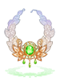

Thanatos Tower
| This quest or instance is repeatable. | ||
|---|---|---|
| Cooldown | Tickets Available | |
|
1 days |
Solo: 0 | Party: 0 |
| Requirements | |
|---|---|
| Base Level: | 180 |
| Starting Point: | |
| Rewards | |
| Experience: | N/A |
| Items: | Piece of Good Will
Brilliant Light Accessories (0.5%) Sinful Accessories (0.5%) |
Overview
Thanatos Tower has received a major rework as of Patch #169 (https://www.novaragnarok.com/forum/news/thanatos-tower-patch-notes-169-r358/). Floors 9 through 12 are now populated by new, harder monsters that drop material used to craft and enchant new accessories. They also drop new cards.
In addition, a new Thanatos Tower instance has been added, which features the Thanatos MVP and a rare Broken Thanatos MVP fight. It now also features an harder version for players that want to experience a stronger challenge - Thanatos Tower (Hard).
Thanatos Tower Floors
By talking to Rie Knidge (navi tha_t01 140 78), you can warp to any floor in Thanatos Tower. The newer monsters are in floors 9-12.
Mob
| Image | Name | Level | HP | Size / Race / Element |
|---|---|---|---|---|
| Empathizer | 200 | 3,788,426 | Medium / Angel / Ghost 4 | |
| Happiness Giver | 202 | 3,827,826 | Small / Angel / Wind 4 | |
| Smile Giver | 201 | 3,808,424 | Medium / Angel / Holy 3 | |
| Pray Giver | 205 | 3,845,709 | Medium / Angel / Ghost 3 | |
| Void Mimic | 203 | 3,842,817 | Medium / Formless / Neutral 4 | |

|
Book of Death | 204 | 3,864,501 | Small / Formless / Undead 4 |
| Eldest | 205 | 3,882,829 | Medium / Demi-Human / Shadow 4 | |
| Crow Duke | 205 | 3,894,053 | Large / Demon / Wind 4 | |
| Crow Baron | 205 | 3,893,746 | Medium / Demon / Neutral 4 | |
| Anger of Thanatos | 203 | 3,845,405 | Large / Demon / Fire 4 | |
| Horror of Thanatos | 201 | 3,807,368 | Small / Demon / Poison 4 | |
| Resentment of Thanatos | 205 | 3,883,906 | Medium / Demon / Ghost 4 | |
| Regret of Thanatos | 202 | 3,831,613 | Large / Demon / Ghost 4 | |
| Memory of Thanatos | 210 | 442,473,071 | Large / Demon / Fire 4 | |
| Broken Memory of Thanatos | 210 | 441,773,071 | Medium / Demon / Neutral 1 |
Floor 9
| Image | Name | Level | HP | Size / Race / Element | Amount |
|---|---|---|---|---|---|
|
|
Book of Death | 204 | 3,864,501 | Small / Formless / Undead 4 | 5 |
| Crow Duke | 205 | 3,894,053 | Large / Demon / Wind 4 | 10 | |
| Crow Baron | 205 | 3,893,746 | Medium / Demon / Neutral 4 | 15 | |
| Eldest | 205 | 3,882,829 | Medium / Demi-Human / Shadow 4 | 5 | |
| Void Mimic | 203 | 3,842,817 | Medium / Formless / Neutral 4 | 5 |
Floor 10
| Image | Name | Level | HP | Size / Race / Element | Amount |
|---|---|---|---|---|---|
|
|
Book of Death | 204 | 3,864,501 | Small / Formless / Undead 4 | 15 |
| Eldest | 205 | 3,882,829 | Medium / Demi-Human / Shadow 4 | 13 | |
| Empathizer | 200 | 3,788,426 | Medium / Angel / Ghost 4 | 5 | |
| Happiness Giver | 202 | 3,827,826 | Small / Angel / Wind 4 | 5 | |
| Void Mimic | 203 | 3,842,817 | Medium / Formless / Neutral 4 | 15 |
Floor 11
| Image | Name | Level | HP | Size / Race / Element | Amount |
|---|---|---|---|---|---|
|
|
Book of Death | 204 | 3,864,501 | Small / Formless / Undead 4 | 3 |
| Empathizer | 200 | 3,788,426 | Medium / Angel / Ghost 4 | 14 | |
| Happiness Giver | 202 | 3,827,826 | Small / Angel / Wind 4 | 14 | |
| Smile Giver | 201 | 3,808,424 | Medium / Angel / Holy 3 | 15 | |
| Pray Giver | 205 | 3,845,709 | Medium / Angel / Ghost 3 | 15 | |
| Horror of Thanatos | 201 | 3,807,368 | Small / Demon / Poison 4 | 2 | |
| Resentment of Thanatos | 205 | 3,883,906 | Medium / Demon / Ghost 4 | 2 | |
| Void Mimic | 203 | 3,842,817 | Medium / Formless / Neutral 4 | 3 |
Floor 12
| Image | Name | Level | HP | Size / Race / Element | Amount |
|---|---|---|---|---|---|
| Anger of Thanatos | 203 | 3,845,405 | Large / Demon / Fire 4 | 12 | |
|
|
Book of Death | 204 | 3,864,501 | Small / Formless / Undead 4 | 3 |
| Horror of Thanatos | 201 | 3,807,368 | Small / Demon / Poison 4 | 15 | |
| Resentment of Thanatos | 205 | 3,883,906 | Medium / Demon / Ghost 4 | 14 | |
| Regret of Thanatos | 202 | 3,831,613 | Large / Demon / Ghost 4 | 15 |
Thanatos Tower Instance
The revamped Thanatos Tower instance includes 7 floors of enemies. Floors 1, 6 and 7 will always be the same, while floors 2-5 will be a random order.
Floor 1
Floor 2-5
Floor 6
Floor 7
Accessories
The following accessories can be acquired from the Thanatos Tower Instance at a 0.5% rate, or from Mini Robe :
- 50 Piece of Sin for 1 Sinful Accessory
- 50 Piece of Good Will for 1 Brilliant Light Accessories
Sinful Accessories
| Image | Name | Description |
|---|---|---|
| Sinful Ruby Ring [1] |
| |
| Sinful Ruby Necklace [1] |
| |
| Sinful Emerald Ring [1] |
| |
| Sinful Emerald Necklace [1] |
| |
| Sinful Topaz Ring [1] |
| |
| Sinful Topaz Necklace [1] |
| |
| Sinful Amethyst Ring [1] |
| |
| Sinful Amethyst Necklace [1] |
| |
| Sinful Sapphire Ring [1] |
| |
| Sinful Sapphire Necklace [1] |
| |

|
Sinful Opal Ring [1] |
|
| Sinful Opal Necklace [1] |
|


Brilliant Light Accessories
| Image | Name | Description |
|---|---|---|
| Brilliant Light Ruby Ring [1] |
| |
| Brilliant Light Ruby Necklace [1] |
| |
| Brilliant Light Amethyst Ring [1] |
| |
| Brilliant Light Amethyst Necklace [1] |
| |
| Brilliant Light Emerald Ring [1] |
| |
|  | Brilliant Light Emerald Necklace [1] |
|
| Brilliant Light Zircon Ring [1] |
| |
| Brilliant Light Zircon Necklace [1] |
| |
| Brilliant Light Sapphire Ring [1] |
| |
| Brilliant Light Sapphire Necklace [1] |
| |

|
Brilliant Light Aquamarine Ring [1] |
|
| Brilliant Light Aquamarine Necklace [1] |
|


Enchants
Sinful Accessories can be enchanted using Piece of Sin, while Brilliant Light Accessories can be enchanted using Piece of Good Will at Tamila .
It costs 10 Fragments for one random enchant, or 50 Fragments to choose which type of enchant you want. You do NOT get to choose which level of enchant you get, only the type. You will only receive 1 enchant at a time, so you will need to enchant twice to fully enchant your accessory.
These Fragments can be acquired from the Thanatos Tower instances. You can also exchange Shards, which are dropped from Thanatos Tower monsters, for Fragments, at a 5 shard (of the same type) to 1 fragment ratio at Mini Robe .
Any of the followings can be traded for a Piece of Sin:

Any of the followings can be traded for a Piece of Good Will:

Brilliant Light Enchants
| 3rd Slot Enchants | 4th Slot Enchants | ||
|---|---|---|---|
 Empathy Lv1 Empathy Lv1
|
Atk + 1% |  Divine Evil Lv1 Divine Evil Lv1
|
Increases physical damage against angel and demon race monsters by 10%. |
 Empathy Lv2 Empathy Lv2
|
Atk + 3% |  Divine Evil Lv2 Divine Evil Lv2
|
Increases physical damage against angel and demon race monsters by 15%. |
 Empathy Lv3 Empathy Lv3
|
Atk + 5% |  Divine Evil Lv3 Divine Evil Lv3
|
Increases physical damage against angel and demon race monsters by 20%. |
 Empathy Lv4 Empathy Lv4
|
Atk + 7% | Divine Evil Lv4 | Increases physical damage against angel and demon race monsters by 25%. |
 Empathy Lv5 Empathy Lv5
|
Atk + 10% |  Divine Evil Lv5 Divine Evil Lv5
|
Increases physical damage against angel and demon race monsters by 35%. |
 Happiness Lv1 Happiness Lv1
|
Matk + 1% |  Destructive Evil Lv1 Destructive Evil Lv1
|
Increases magical damage against angel and demon race monsters by 10%. |
 Happiness Lv2 Happiness Lv2
|
Matk + 3% |  Destructive Evil Lv2 Destructive Evil Lv2
|
Increases magical damage against angel and demon race monsters by 15%. |
 Happiness Lv3 Happiness Lv3
|
Matk + 5% |  Destructive Evil Lv3 Destructive Evil Lv3
|
Increases magical damage against angel and demon race monsters by 20%. |
 Happiness Lv4 Happiness Lv4
|
Matk + 7% |  Destructive Evil Lv4 Destructive Evil Lv4
|
Increases magical damage against angel and demon race monsters by 25%. |
 Happiness Lv5 Happiness Lv5
|
Matk + 10% |  Destructive Evil Lv5 Destructive Evil Lv5
|
Increases magical damage against angel and demon race monsters by 35%. |
 Shelter Lv1 Shelter Lv1
|
Increases critical damage by 1%. | ||
 Shelter Lv2 Shelter Lv2
|
Increases critical damage by 3%. | ||
 Shelter Lv3 Shelter Lv3
|
Increases critical damage by 5%. | ||
 Shelter Lv4 Shelter Lv4
|
Increases critical damage by 7%. | ||
 Shelter Lv5 Shelter Lv5
|
Increases critical damage by 10%. | ||
 Solace Lv1 Solace Lv1
|
MaxHP + 1%, MaxSP + 1% | ||
 Solace Lv2 Solace Lv2
|
MaxHP + 3%, MaxSP + 3% | ||
 Solace Lv3 Solace Lv3
|
MaxHP + 5%, MaxSP + 5% | ||
 Solace Lv4 Solace Lv4
|
MaxHP + 7%, MaxSP + 7% | ||
 Solace Lv5 Solace Lv5
|
MaxHP + 10%, MaxSP + 10% | ||
Sinful Enchants
| 3rd Slot Enchants | 4th Slot Enchants | ||
|---|---|---|---|
 Anger Lv1 Anger Lv1
|
Atk + 1% |  Inverse Evil Lv1 Inverse Evil Lv1
|
Increases physical damage against angel and dragon race monsters by 10%. |
 Anger Lv2 Anger Lv2
|
Atk + 3% |  Inverse Evil Lv2 Inverse Evil Lv2
|
Increases physical damage against angel and dragon race monsters by 15%. |
 Anger Lv3 Anger Lv3
|
Atk + 5% |  Inverse Evil Lv3 Inverse Evil Lv3
|
Increases physical damage against angel and dragon race monsters by 20%. |
 Anger Lv4 Anger Lv4
|
Atk + 7% |  Inverse Evil Lv4 Inverse Evil Lv4
|
Increases physical damage against angel and dragon race monsters by 25%. |
 Anger Lv5 Anger Lv5
|
Atk + 10% |  Inverse Evil Lv5 Inverse Evil Lv5
|
Increases physical damage against angel and dragon race monsters by 35%. |
| Horror Lv1 | Matk + 1% |  Dragon Scale Lv1 Dragon Scale Lv1
|
Increases magical damage against angel and dragon race monsters by 10%. |
 Horror Lv2 Horror Lv2
|
Matk + 3% |  Dragon Scale Lv2 Dragon Scale Lv2
|
Increases magical damage against angel and dragon race monsters by 15%. |
 Horror Lv3 Horror Lv3
|
Matk + 5% |  Dragon Scale Lv3 Dragon Scale Lv3
|
Increases magical damage against angel and dragon race monsters by 20%. |
 Horror Lv4 Horror Lv4
|
Matk + 7% |  Dragon Scale Lv4 Dragon Scale Lv4
|
Increases magical damage against angel and dragon race monsters by 25%. |
 Horror Lv5 Horror Lv5
|
Matk + 10% |  Dragon Scale Lv5 Dragon Scale Lv5
|
Increases magical damage against angel and dragon race monsters by 35%. |
 Resentment Lv1 Resentment Lv1
|
Increases critical damage by 1%. | ||
 Resentment Lv2 Resentment Lv2
|
Increases critical damage by 3%. | ||
 Resentment Lv3 Resentment Lv3
|
Increases critical damage by 5%. | ||
 Resentment Lv4 Resentment Lv4
|
Increases critical damage by 7%. | ||
 Resentment Lv5 Resentment Lv5
|
Increases critical damage by 10%. | ||
 Regret Lv1 Regret Lv1
|
MaxHP + 1%, MaxSP + 1% | ||
 Regret Lv2 Regret Lv2
|
MaxHP + 3%, MaxSP + 3% | ||
 Regret Lv3 Regret Lv3
|
MaxHP + 5%, MaxSP + 5% | ||
 Regret Lv4 Regret Lv4
|
MaxHP + 7%, MaxSP + 7% | ||
 Regret Lv5 Regret Lv5
|
MaxHP + 10%, MaxSP + 10% | ||
Enchant Resetting
Enchantments can be reset with one of the two options:
- 1,000,000 zeny for 70% success. On failure, all materials and the accessory are destroyed.
- 150 Shards of a single type for 100% success. (NOTE: In the NovaRO Announcement page, it says 100 Shards, but ingame it says 150)
You can only reset your accessory if it is fully enchanted (has 2 enchants on it).
Thanatos Tower Cards
| Card | Type | Effects |
|---|---|---|
| Accessory (Left) Card |
| |
| Accessory (Right) Card |
| |
| Garment Card |
| |
| Garment Card |
| |
| Garment Card |
| |
| Garment Card |
| |
| Garment Card |
| |
| Shield Card |
| |
| Shield Card |
| |
| Weapon Card |
| |
| Shield Card |
| |
| Accessory Card |
| |
| Weapon Card |
| |
| Footgear Card |
|